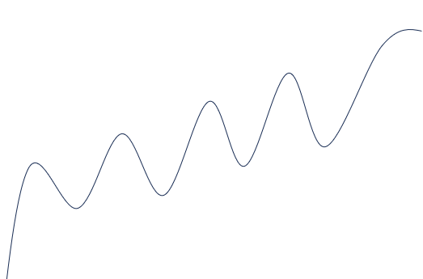

本书作者：测试开发刚哥，文章版权归个人所有，未经授权请勿转载。
大学，已经过去十年了。
这周技术群有个讨论：怎么能够持续学习？想要抽时间总结工作经验，梳理技术知识，持续提升自己，可是没有动力让自己去做这件事。
这个问题，也许我有些发言权，毕竟曾经身边有很多优秀的同学，现在身边也有很多优秀的同事，我也是个以学习为快乐的人。
2个问题，怎么才能学习起来？怎么才能坚持学习？
**怎么才能学习起来？**学习这件事，需要一定动力。我的动力很简单，“想成为优秀的人”。
这是我写文章时才想出来的动力。这似乎很奇怪。有些人是这样的，要开始学习了，那先想个目标吧，一定要先找出能够一辈子坚持的终极目标，以终为始，才开始学习。实际上，这种目标很可能一辈子都找不到。反而会增加负能量，我竟然都不知道自己想要什么。
**停止寻找学习目标，学习方法才是学习动力。**用方法驱动学习，就好比一艘风帆，在没有风的时候，是划不起来的。可一旦装上发动机，就能跑的和飞艇一样快，去往任何目的地。
第一个学习方法是，时间管理。学习一下午很累，可以像上课一样，学习30分钟，休息10分钟，就要轻松很多。
第二个学习方法是，费曼学习法。用自己的话把知识讲出来，这能让学习变得很有趣。
如果实在不想学习，去自习室，去图书馆，呆一下，或许能找到属于自己的方法。
怎么才能坚持学习？坚持学习的过程大概是这样：

并不是一条直线，而是起起伏伏的状态。
有时候不想学习，并不代表我就不学习了，等到状态回升，我会继续学习，没有内耗和焦虑。
真正的坚持，是会忘记坚持的，就像每天吃饭一样。
养成良好学习习惯，自然就会持续学习。